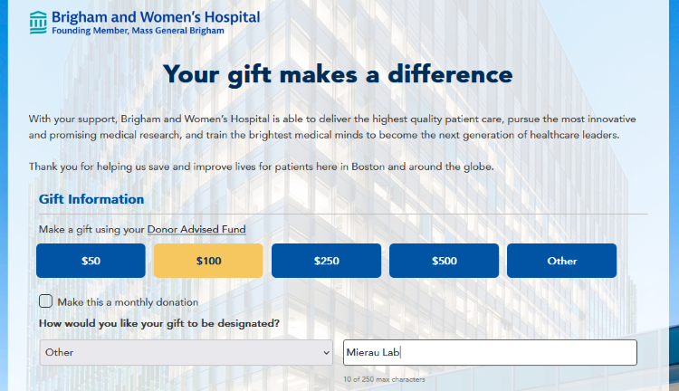

Support our work
Our aim is to elucidate how synaptic dysfunction in neurodevelopmental disorders alters the development of functional networks at the cellular scale. Our approach integrates tools from neurophysiology, neuroanatomy, stem cell biology, genomics, computational neuroscience, applied math, engineering and computer science. Our research benefits from the many resources available from the neuroscience and network science communities. We are also excited to share the tools we have developed with other research groups. We are always looking for team members and collaborators to join us in investigating network development at the cellular scale.
Fund our research
Brigham and Women's Hospital Giving Page
Your donations will help us continue our research to better understand and treat neurological disorders including autism spectrum disorder (ASD), Rett syndrome and other neurodevelopmental disorders.
How to donate: (1) Go to BWH Giving Page at https://giving.brighamandwomens.org/. (2) For "How would you like your gift to be designated?", select "Other" from the drop-down menu. (3) Write "Mierau Lab" in the box for our Synaptic and Network Development (SAND) research group. 
Collaborate with us
Students interested in joining in our research should contact our group leader, Dr. Susanna Mierau at smierau[at]bwh.harvard.edu. MIT and Harvard undergraduates may be eligible for college credit, work-study or other funded research programs. Medical students, residents and fellows are also most welcome to join.
People with programming experience who are interested in helping us translate our MATLAB-based pipeline to a free, open source programming language such as Python or Julia, please contact Dr. Mierau. This would help our tools reach a wider neuroscience community.
People with gaming or other high performance computers who are interested in donating computer processing time to our research, please let us know. There are a growing number of exciting collaborations where people in the community with computing resources can donate time for neurological research batch analysis to run while at work, for example. Please contact Dr. Mierau if you are interested. All of our data processing is on MEA spike trains or images of neuronal cultures and does not contain any sensitive data.